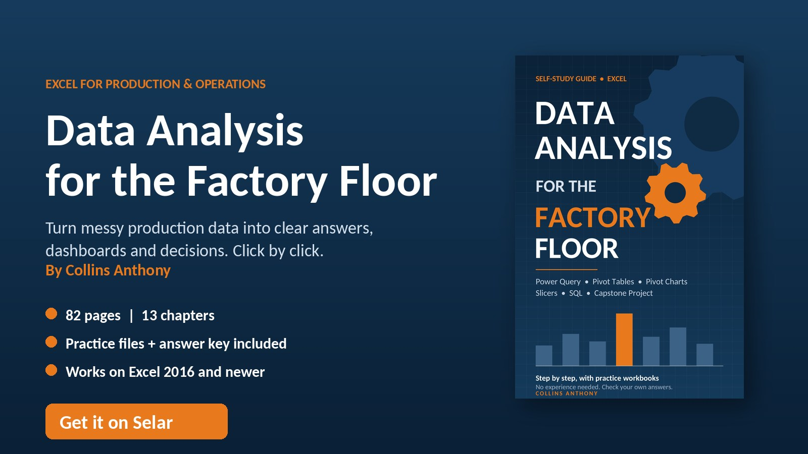
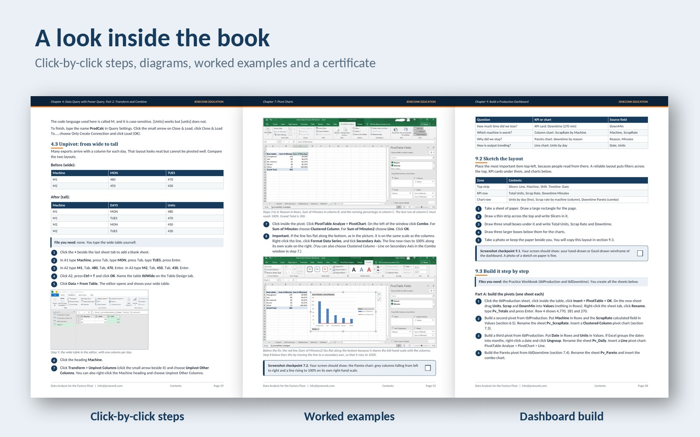

Excel and clean data foundations
Set up a workbook, understand production fields and prepare structured data for analysis.
Excel for production and operations
Turn messy production data into clear answers, dashboards and decisions. Click by click, in Excel.

Production data, put to work
Production reports often arrive as machine exports or long spreadsheets. This guide teaches a repeatable way to prepare those records, ask useful questions and explain what the numbers show.
Follow the same factory-style dataset through the lessons so you can check your steps and answers. Then practise with a larger dataset containing 1,236 production rows, 600 downtime events and a messy export.
Inside the 13 chapters
The book uses realistic production, scrap and downtime questions to connect each Excel skill to an operations decision.
Set up a workbook, understand production fields and prepare structured data for analysis.
Import, transform and combine files, then refresh the process when source data changes.
Summarise units, scrap and downtime by machine, shift, line and date.
Visualise patterns, compare downtime and filter reports interactively.
Arrange key indicators for managers and analyse connected tables.
Practise basic queries, complete a production analysis project and work through larger, messier records.

Practice and check your work
Each chapter explains why a technique matters, introduces key terms, walks through the clicks, gives you a task to try and includes answers and troubleshooting help. Screenshot checkpoints help you compare your workbook with the expected result.
What you need: A computer with Excel 2016 or newer on Windows. The book uses Excel 2016 menu names. Excel for Mac and Excel for the web may have fewer Power Query features.
Start with your factory data
Get the complete book and digital practice package on Selar. The free mini guide lets you try your first factory pivot table before you decide.
Book questions
No. The book starts with Excel foundations and is written for self-learners who want to follow the steps and check answers as they go.
Use Excel 2016 or newer on Windows. The guide uses Excel 2016 menu names. Some Power Query features may be located differently or unavailable in Excel for Mac and Excel for the web.
The example production data is made up for training. The capstone helps you practise the method with your own data where you are authorised to use it.
Your First Factory Pivot Table introduces a small factory production dataset and a first pivot-table exercise. The complete book continues into Power Query, charts, slicers, dashboards, SQL and a capstone project.
Purchase and download the digital book package through Selar. For questions about the book, contact info@jeneconk.com.